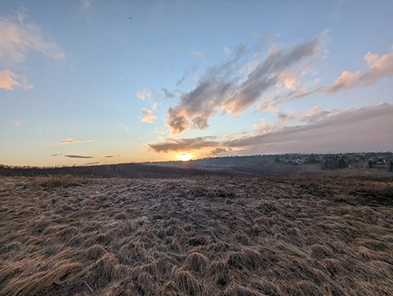
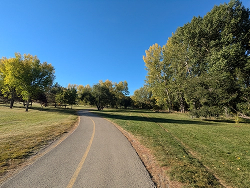
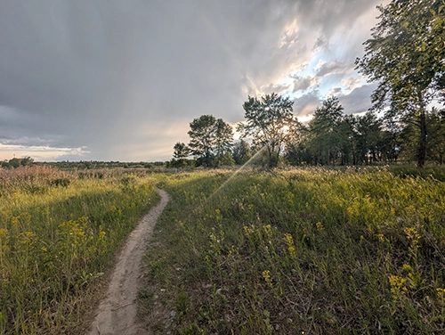

Did you know that Calgary has over 8500 hectares of parks and natural areas? Over 75 recreational parks are maintained for us to enjoy [1]! Now for those of you who haven’t gotten a chance to visit, these are some of the best parks in Calgary and the reasons that make them #1 on most people’s lists.
Nose Hill Park
This park is loved for the best view of the city, its bike paths, hiking trails, and large off-leash designated areas. It’s the fourth largest urban park in Canada at 1129 hectares. It is also home to native plants and a variety of wildlife like white tailed deer, coyotes, porcupines and more. Nose Hill Park is considered a natural environment and holds some of the notable grassland ecosystem that are sparce in the prairies [2], [3].
Nose Hill Park is also a historical part of our city. In the 1980s, the park was officially considered a protected area. In addition, the park used to be land favorable for bison. There is archeological evidence that bison hunters dwelled on the land, and that many Native groups trafficked the area. In fact, the park is a Siksikaitsitapi (Blackfoot Confederacy) landmark known as Ootssapi’tomowa (Look out hill) [2].
Confederation Park
This 92-hectare crescent shaped area is home to a coulee and wetlands. The wetlands support aquatic vegetation that attracts different species of ducks, geese and insects. The several species of mature trees are another beautiful feature, especially in the summer and fall season. All along the park are paved trails ideal for walking, running, and biking. Many families come to enjoy this space, especially with the natural playground, tennis courts, baseball diamonds, golf course, picnic areas and cross-country skiing in the winter [4], [5].
In 1967, the park was created to celebrate the centennial of Canadian Confederation. Before this, in the mid 1960s, the Ravine Park Society put their best efforts in conserving the North Hill Coulee (the one that runs through the park today) and raised funds to create the park [5].
Fish Creek Provincial Park
This park in the South-west protects the area of the Fish Creek Valley and covers about 1348 hectares. It is the second largest urban park in Canada, and one of the largest in North America. The area attracts many animals due to its proximity to the river and its variety of environments and is home to beavers, deer, coyotes, waterfowl, eagles and more. There is over 100 km of trails for walking and biking and amenities like the Visitors centre, the Sikome aquatic centre, picnic areas and restaurants. The area is also popular for fishing, with a boat launch available to get on the water [6].
Fish Creek Park was formed by the Ice age; it used to be covered by a glacier. Further in history it was home to the Indigenous people who used it for bison pounds, then to European settlers who used the land for farming and ranching. In 1972, the provincial government bought the park from the Burns family and eventually in 1975, the park opened [7], [8].
